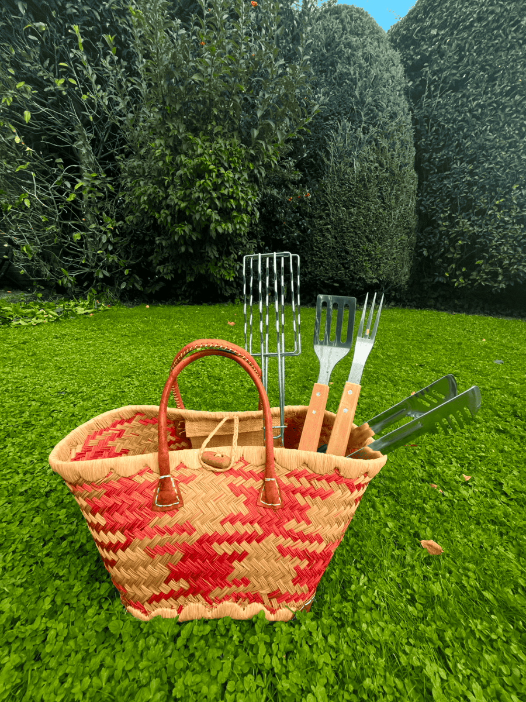
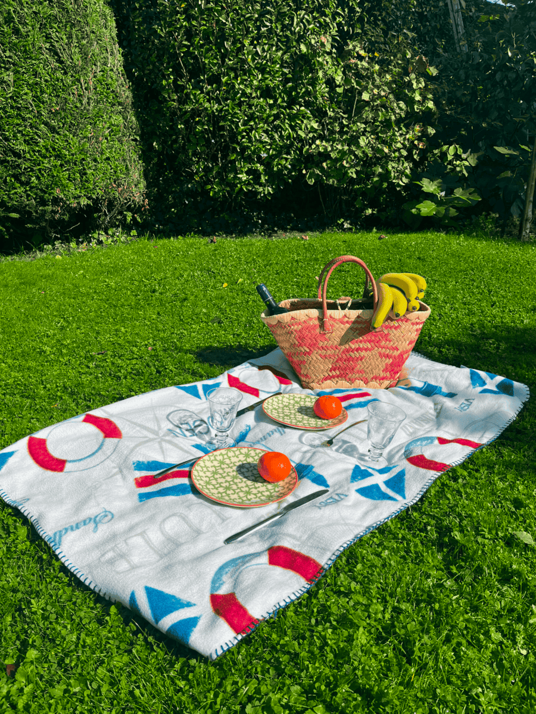
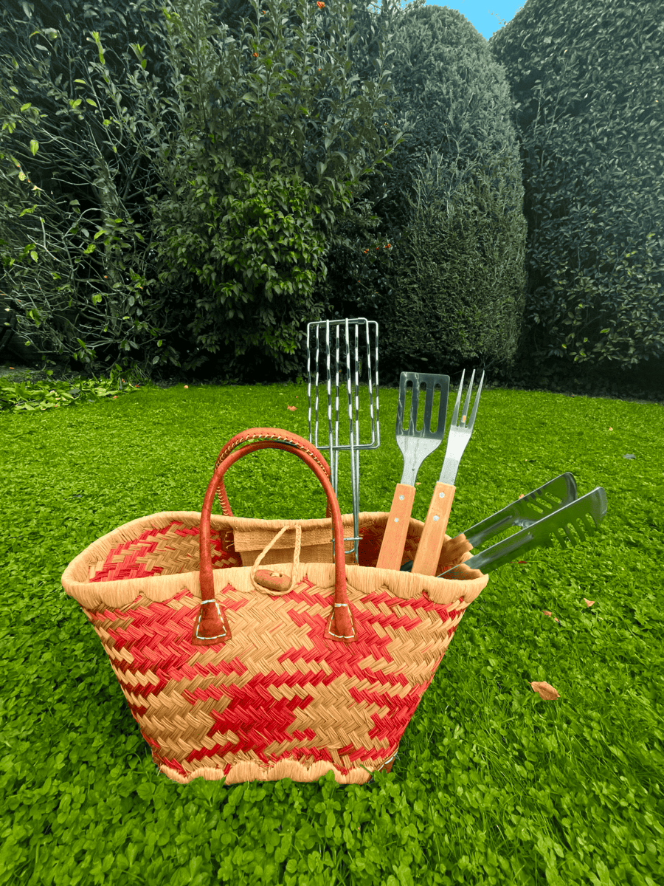
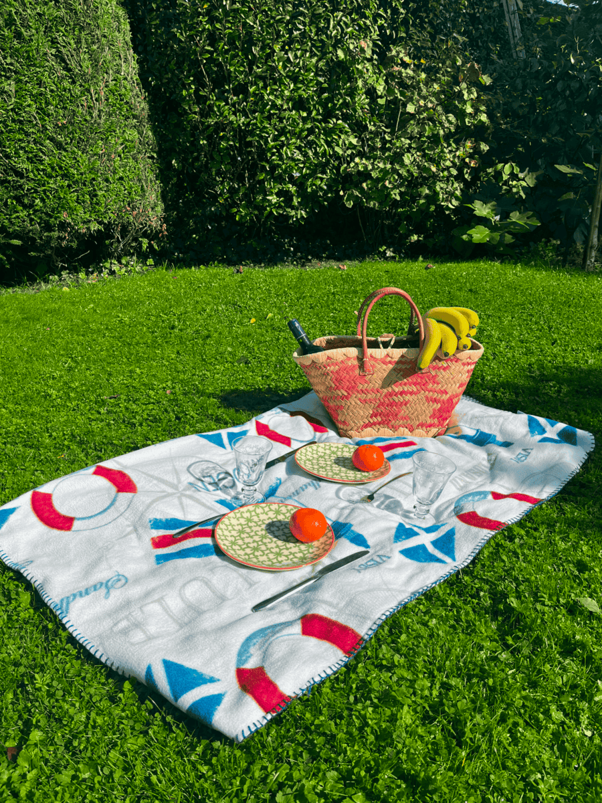

Before setting up your barbecue, It’s essential to understand and follow the municipality rules of Amsterdam, and several other regulations regarding grilling. For more information, check our page about Barbecue Rules in Noorderpark and ensure you comply with park policies and avoid any issues.
In this space, you can count on a nice barbecue grill, conveniently installed close to a playground. Put in mind that it's situated near a toilet and a picnic table, offering a perfect spot for families to enjoy outdoor gatherings with easy access to essential conveniences.
| Item | Description |
|---|---|
| Grill | Portable or charcoal grill. Best options |
| Fuel | Charcoal |
| Tools | Tongs, spatula, and grill brush |
| Food | Marinated meats, vegetables, and sides |
| Cooler | For keeping drinks and perishables fresh |
| Utensils | Plates, cups, and cutlery |
| Extras | Napkins and trash bags |
.png) 



To guarantee a memorable and delicious barbecue, it’s essential to think about a well-planned menu. We recommend you to prepare a mix of main dishes (like burgers, steak), sides (salads, dips, and chips), and refreshing drinks.
Also, try to prepare some items in advance to save time and ensure everything is ready when it's time to grill.
Don’t risk losing a good spot by arriving late. Being early helps you avoid the stress of searching for a nice place and set up before the park gets busy. It also gives you time to prepare and enjoy the pre-grill festivities.
Before leaving the park, make sure the area you used is as clean as you found it. It’s super important to dispose of all trash and recyclables properly to ensure the park keeps looking beautiful and also contributes to the overall health of local environment."